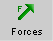
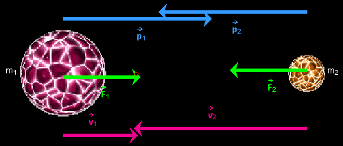

Instructions
This page is designed to get you started using the applet. The applet should be open. The step-by-step instructions on this page are to be done in the applet. You may need to toggle back and forth between instructions and applet if your screen space is limited.

Exercise 1. Reset  the applet.
the applet.
Set the mass of Planet 1 (on the left) to 7,000. This will automatically set the mass of Planet 2 to 3,000. The combined mass of both planets is always 10,000.
Select the Forces button  to display the gravitational
forces  1 and 2 acting on the two planets. They
are represented by green arrows of equal lengths pointing in
opposite directions, from one planet towards the other.
1 and 2 acting on the two planets. They
are represented by green arrows of equal lengths pointing in
opposite directions, from one planet towards the other.
Exercise 2. Select the Data button  to display the Data box. Observe the
value of the distance r between the planets shown in
the Data box. This value depends on the size of the applet
window. If r is not equal to 492.0, adjust the size of
the applet window by dragging the window in its lower
right-hand corner until r = 492.0. For this value of
r, the Data box shows the following values for the
magnitudes of the two forces: F1 =
F2 = 5.79E2 = 5.79×102.
to display the Data box. Observe the
value of the distance r between the planets shown in
the Data box. This value depends on the size of the applet
window. If r is not equal to 492.0, adjust the size of
the applet window by dragging the window in its lower
right-hand corner until r = 492.0. For this value of
r, the Data box shows the following values for the
magnitudes of the two forces: F1 =
F2 = 5.79E2 = 5.79×102.
The magnitudes are calculated according to the equation
F1 = F2 = G
m1m2 /
r2,  G = 6.67 .
G = 6.67 .  (1)
(1)
All physical quantities in the applet are in unspecified units.
Exercise 3. Move the Zoom slider to settings smaller than 100% so that the two planets are not so close to the edge of the applet window. Observe that the Zoom setting affects both the length scale and the size of the arrows representing the forces.
Drag the Data box partially off-screen so that it does not cover any of the planets. If you drag the Data box fully off-screen, you can get it back by clicking Reset.

Exercise 1. Keep the mass settings and window size from the previous section, but set the Zoom slider back to 100%. PLAY the motion, and PAUSE it before the planets collide. Depending on where you pause, you will get a display similar to that shown in Figure 1 below.

Figure 1
The momentum and force vectors will have equal magnitudes, but the velocity of Planet 2 will have a greater magnitude than that of Planet 1.
Make sure the Pause-Before-Collision radio button is unselected, resume the motion by clicking PLAY and watch the planets collide.
Then go through the following sequence of operations and observations.
Exercise 1. RESET the applet, and set the mass of Planet 2 to m2 = 3,000. This will automatically set the mass of Planet 1 to m1 = 7,000. Select the Forces toggle button . The forces acting on the two planets are represented by green arrows. Observe that the arrows have equal lengths.
PLAY the motion and PAUSE it before the planets collide.
Select the Velocities  button to display the velocities of the two
planets (in magenta). Observe that Planet 1, which has the
larger mass, has a velocity arrow of shorter length than Planet
2. Display the momenta of the two planets (in blue) by selecting
the ,
and observe that the momentum arrows of the two planets have the
same length. Figure 2 illustrates a typical situation. The size
of the vectors depends on which point you have paused the
motion.
button to display the velocities of the two
planets (in magenta). Observe that Planet 1, which has the
larger mass, has a velocity arrow of shorter length than Planet
2. Display the momenta of the two planets (in blue) by selecting
the ,
and observe that the momentum arrows of the two planets have the
same length. Figure 2 illustrates a typical situation. The size
of the vectors depends on which point you have paused the
motion.
Figure 2
Exercise 2. Select and deselect the Data toggle button
to display or
hide the Data box shown in Figure 3 below.

Figure 3
When the Data box is displayed, drag it to another location on the screen. Close it by clicking the "X" in the top right corner of the box.